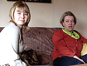
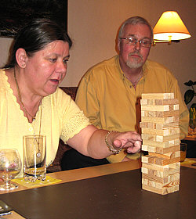
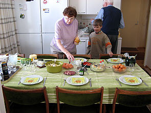
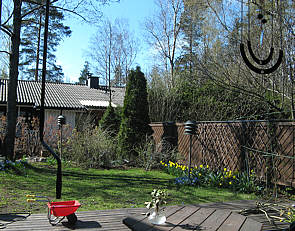
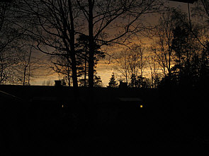
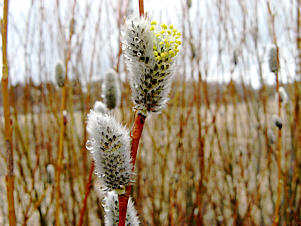

Huhtikuu 2007 |
Samin synttäritSamin syntymäpäiviä vieteltiin maalis-huhtikuun vaihteessa. Yllätysvieraaksi saimme Kinon, joka on jo sen verran kasvanut ja sisäsiistejä käytöstapoja oppinut, että on mahdollista tehdä pieniä visiittejä. Kino tutustui tarkasti villakoirayhdyskuntaamme. Saimme myös tuulahduksen Suomen puolustusvoimista ja kyselimme sen muonituksen tilasta. Sotilaskeittäjä Tatu raportoi asiasta. Tiedetäänhän, että armeija marssii vatsallaan, joten kuulemamme perusteella päättelimme, että voimme olla turvallisin mielin. Kunhan vain pakkipusseja riittää, etteivät pakit pääse likaantumaan. Tatun kuuden kuukauden komennuksesta on puolet jäljellä ja siitäkin taitaa puolet olla lomia. Nolojen tilanteiden lomamatkaKävimme siis kuun vaihteessa Samin kanssa miehissä Tikkurilan elokuvateatterissa nauramassa mr Beanille. Mr. Bean Lomalla on sarja kommelluksia ja kohelluksia, jatka tapahtuvat hänene yrittäessään epätoivoisesti päästä Ranskan Rivieralle viettämään lomaansa. Ilmeisesti tämä oli jonkinlainen kunnianosoitus Jacques Tatille ja hänen monsieur Hulot -hahmolleen elokuvassa Riemuloma Rivieralla. Tämä elokuva ei tosin noussut lähellekään esikuvansa tasoa. Mutta mr. Bean on mahdottomuudessaankin aina jotenkin sympaattinen tyyppi. Telkkarissa analysoitiin ylipäätään mr. Beanin hahmoa ja hänestä tehtyjä pitkiä elokuvia. Siinä todettiin, että on erittäin vaativaa ja vaikeaa tehdä lyhyisiin erillisiin sketseihin perustuvasta konseptista pitkä elokuva, jossa olisi alusta loppuun asti kantava juoni. Lisäksi huomasin, että tietyt tutut mr. Beanin jujut toistuivat filmissä ja tuntuivat siinä mielessä vähän latteilta. Mutta toisaalta, olen huomannut, että kun TV:stä tulee ties kuinka moneen kertaan pyörineet vanhat pätkät, niin siitä huolimatta niitä jää aina seuraamaan. Mr. Beanissa on jotakin kiehtovaa. PääsiäistäPääsiäisen vietto aloitettiin pitkänä perjantaina. Weguille tarjottiin karitsan filettä ja vuohenjuustoperunoita. Ja tietysti pääsiäisen kunniaksi pashaa. Ohjelmaan kuului myös seurapelit. Ensin pelattiin Samin saamaa lautapeliä (Carcassonne), jossa rakennellan keskiaikaista kylää teineen, linnoineen, luostareineen ja peltoineen. Se on hauska peli, jossa sopivasti taktikoimalla epätoiviselta näyttävä pistetilanne voi loppulaskennassa kääntyäkin voitoksi. Sitten harjoitettiin käden vakautta. Rakensimme huojuvan tornin, josta kukin vuorollaan joutui poistamaan yhden palan ja laittamaan sen takaisin tornin päälle. Torni tuntui uhmaavan painovoima- ja muita luonnonlakeja ennen romahtamistaan. Pääsiäisen viettoa jatkettiin mummin perinteisellä pääsiäisbrunssilla. Sen jälkeen pidin pari päivää vapaata ennen Elisan tarjooma-yksikössä päättyneitä yt-neuvotteluja. Taas kerran oli työpaikka katkolla, kuin telkkari tosi-TV sarjoissa ainakin, mutta minun kohdallani "tanssiharjoitukset" jatkuvat.  |
Kuukauden sääHuhtikuu oli täysin lumeton ja kevät teki tuloaan parin viikon etuajassa. Sääennusteissa varoitettiin samanaikaisesti ruohikkopaloista etelässä ja liukkaista keleistä vähän pohjoisempana. Lämmintä oli ajoittain kuin kesällä ainakin. Kuukauden ajatusNiin vähäpätöistä tehtävää ei olekaan, etteikö sitä kannattaisi tehdä kunnolla. Mari Aulanko: Johdan itseäni Kuukauden kuvaKevätkissoja |